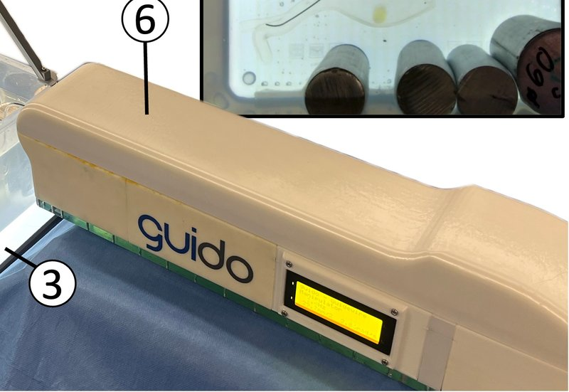

Academic bedside robots · fraunhofer_karstensen2022
Wire manipulator
Karstensen guidewire manipulator (stEVE test platform)

1 / 4


- Family
- Academic bedside robots (academic)
- Devices
- one guidewire (0.035 in Terumo Radifocus angled stiff)
- Degrees of freedom
- 2 (translation, continuous rotation)
- Push
- Linear stage
- Twist
- Rotating clamp
- Tested up to
- Ex vivo
- Sim-to-real
- Yes — A controller or perception model trained in simulation ran on this robot.
Testing
- Highest level
- Ex vivo
- What was tested
- 2019: 10 sim-trained DDPG runs on a PMMA bifurcation phantom (behr2019 Sec. 3); 2020: 2D glycerin-water phantom, sim-trained DDPG+HER on the bench (karstensen2020 Results); 2022: 30 targets (10 per main vein) in one ex-vivo porcine liver; 2025: 100 + 100 camera trials, 10 fluoroscopy trials on printed arch phantoms
- Key numbers
- 2019: sim 89.6% (DDPG+HER) -> bench 7/10 (behr2019 Sec. 3); 2020: sim max 96% after 52,500 episodes, bench 'same results as in simulation', 100% with the next bifurcation as interim target (karstensen2020 Results); 2022: sim 100% (150/150) -> ex vivo 30% (9/30; wrong branch 10, entanglement 11); 2025: BasicWireNav sim 98% -> camera 97%, fluoroscopy 10/10; ArchVariety sim 90% -> camera 84%; action limits +-10 mm/s, +-6.28 rad/s at 7.5 Hz
Mechanism
- Push (translation)
- linear-stage+clamp (wire fixed to a stepper on a linear rail driven by a second stepper)
- Twist (rotation)
- stepper with the wire attached directly (infinite rotation)
- Device range
- N.R.
- Target anatomy
- hepatic veins (porcine liver ex vivo); aortic arch phantoms; planar PMMA / 3D-printed 2D vessel phantoms (2019, 2020)
Sensing and interface
- Force sensing
- none
- Leader and haptics
- none; gamepad manual control
- Imaging
- C-arm fluoroscopy with recurrent-CNN tip tracker; or overhead camera (2019-2020: camera above, light source below the phantom emulating fluoroscopy, 5 Hz; karstensen2020 Methods)
- Sterility
- N.R.
Size
- Footprint (mm)
- N.R. (translation 300 mm)
- Mass (kg)
- N.R.
Simulation
- Simulation model
- yes: SOFA + BeamAdapter (behr2019_deep, karstensen2020_autonomous, karstensen2022_learning), stEVE (karstensen2025_learning)
- Sim-trained controller
- yes: behr2019_deep (full) DDPG sim 89.6% -> bench 7/10; karstensen2020_autonomous (full) DDPG+HER sim 96% -> bench same, 100% with interim targets; karstensen2022_learning (full) 100% sim -> 30% ex vivo; karstensen2025_learning (via the sim-to-real study table) 97%/84%/10-of-10
- Studies on this robot
- 2019 · Deep Reinforcement Learning for the Navigation of Neurovascular Catheters — sim DDPG + HER 89.6% (sparse reward), DQN + Rainbow 86.5% (dense reward), average success rates; SD over four training attempts 4.4% and 6.2%; plain DDPG 83.1%, DDPG + HER + HD 87.9% (Sec. 3, Figs. 4-5); episodes per evaluation N.R.; robot 7/10 (the trained DDPG model on the test bench) (Sec. 3)
- 2020 · Autonomous guidewire navigation in a two dimensional vascular phantom — sim maximum 96% after 52,500 training episodes (100 test episodes every 500 training episodes; success = target within 25 s) (Materials and methods, Results, Fig. 3); robot 'the same results as navigating in the simulation environment' (no number, episodes N.R.); 100% with the next bifurcation as interim target, evaluated 'to improve the success rate on the testbench' (Materials and methods, Results)
- 2022 · Learning-based autonomous vascular guidewire navigation without human demonstration in the venous system of a porcine liver — sim 150/150 (100%) at training end; robot 9/30 (30%): wrong branch 10, entanglement 11
- 2025 · Learning-based autonomous navigation, benchmark environments and simulation framework for endovascular interventions — sim BasicWireNav 98/100; ArchVariety 90/100; DualDeviceNav 40/100 (sim only); robot BasicWireNav camera 97/100 (9/10 on the first 10), fluoroscopy 10/10; ArchVariety camera 84/100
Versions
- Lineage
- 2019 CDBME test bench (behr2019_deep: 'experimental robotic manipulator' for the two guidewire DOF, 300 mm linear travel, infinite rotation, PMMA phantom, Sec. 2.4); 2020 CDBME 2D phantom bench (karstensen2020_autonomous: 'testbench manipulator ... reused', Materials and methods, Fig. 1); 2022 IJCARS (ex-vivo liver); 2025 CBM stEVE benchmark (camera and fluoroscopy benches)
Sources
- Learning-based autonomous vascular guidewire navigation without human demonstration in the venous system of a porcine liver · International Journal of Computer Assisted Radiology and Surgery, 2022 · doi:10.1007/s11548-022-02646-8 [karstensen2022_learning]
- Learning-based autonomous navigation, benchmark environments and simulation framework for endovascular interventions · Computers in Biology and Medicine, 2025 · doi:10.1016/j.compbiomed.2025.110844 [karstensen2025_learning]
- Autonomous guidewire navigation in a two dimensional vascular phantom · Current Directions in Biomedical Engineering, 2020 · doi:10.1515/cdbme-2020-0007 [karstensen2020_autonomous]
- Deep Reinforcement Learning for the Navigation of Neurovascular Catheters · Current Directions in Biomedical Engineering, 2019 · doi:10.1515/cdbme-2019-0002 [behr2019_deep]
Notes
- Notes
- Manipulator is small and drawn as a labelled box; no close-up photo in the paper. | 2026-11-08 X3: first_year 2022 -> 2019: behr2019 (Sec. 2.4) already ran a sim-trained DDPG on this group's 2-DOF guidewire manipulator (300 mm travel, infinite rotation), and karstensen2020 states the test-bench manipulator was reused. behr2019 is not simulation-only: 7 of 10 bench runs reached the goal (Sec. 3)
This record
- Read level
- full — full (karstensen2022_learning; behr2019_deep and karstensen2020_autonomous CDBME PDFs read 2026-11-08; karstensen2025 via the sim-to-real study table)
- Picture
- karstensen2025_learning Fig. 4(a) (arXiv 2410.01956 preprint, embedded 2342x1553): guidewire manipulator in its 'guido' housing, callout 6 ↗ — licence: arXiv non-exclusive distribution licence (authors' copyright); grade C
- Picture changes
- native extract; cropped; callouts 3 and 6 and the camera-image inset kept (the inset covers the back of the housing; removing it would invent pixels); not upscaled
- Found by
- academic: Search of academic bedside robots.
- Data
- JSON · YAML:
records/robots/fraunhofer_karstensen2022.yaml - Correction
- Suggest a correction [repository not created yet]